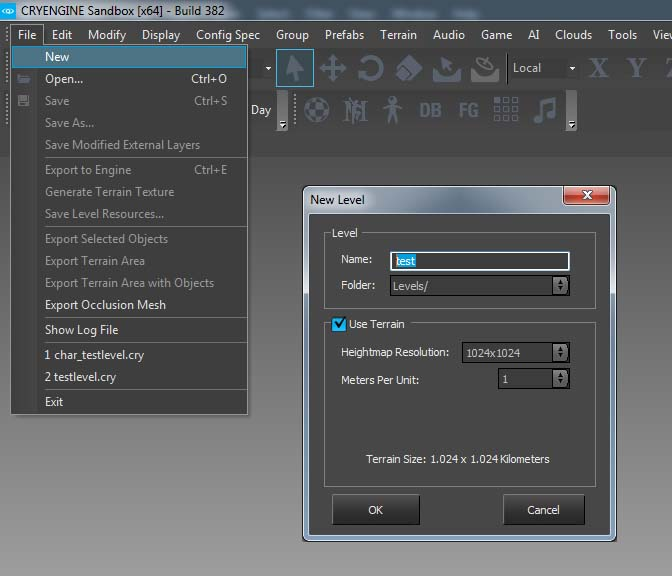
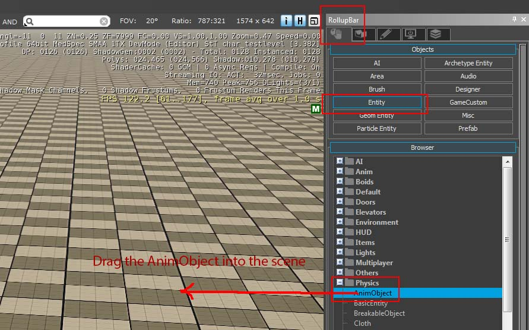
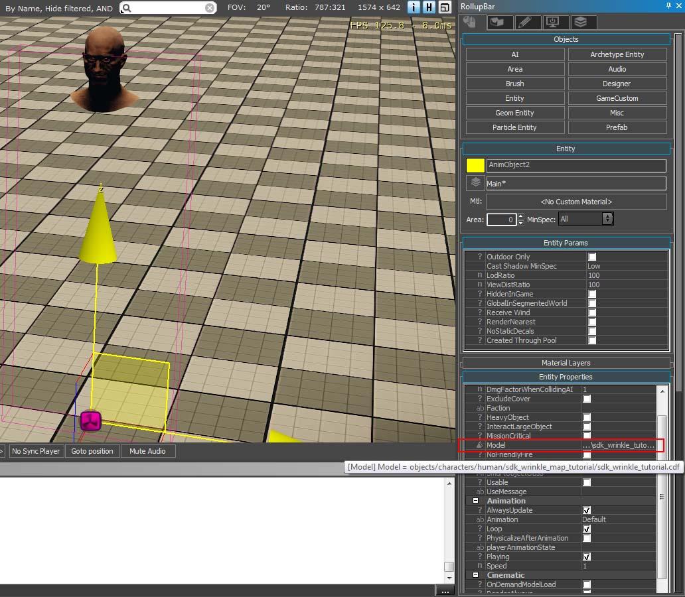
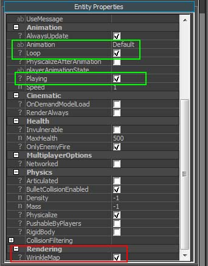
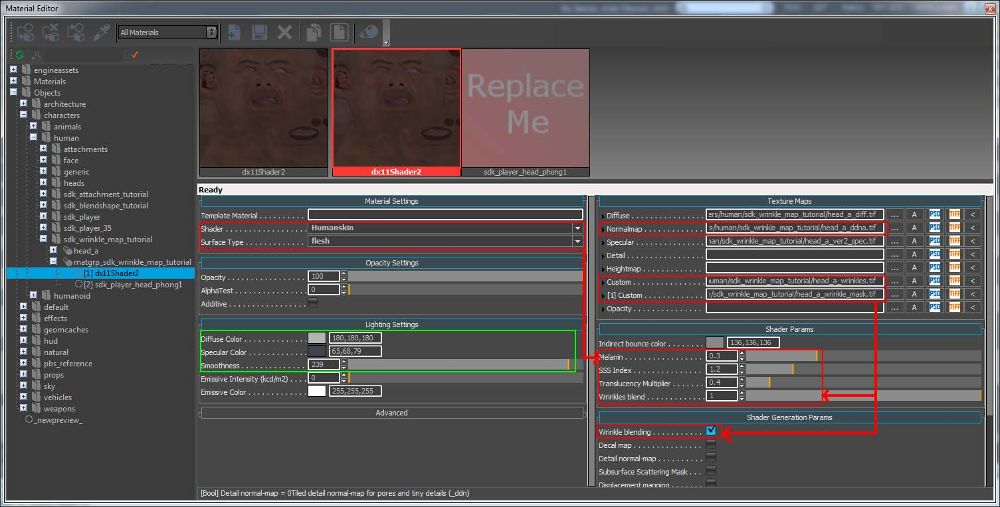
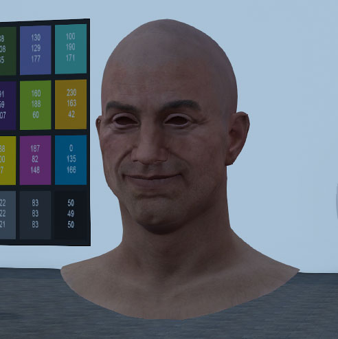

Настройка карты морщин в CRYENGINE
Следующие шаги покажут вам, как создать материал для карт морщин в CRYENGINE Material Editor и добавить "AnimObject" в редакторе Sandbox.
Поскольку были добавлены четыре вспомогательных соединения от "blend_control_01" до "..04", файлы скелета *.CHR, *.SKIN и *.I_CAF необходимо повторно экспортировать. Также проверьте, нужно ли вам реэкспортировать материал. При желании материал «sdk_wrinkle_tutorial» можно позже заменить новым материалом морщин или вы можете изменить «head_a.mtl», чтобы он работал в качестве материала морщин, и назначить голову этому материалу — выберите то, что вам больше всего нравится.
Откройте редактор CRYENGINE Sandbox, войдите в Character Tool и добавьте новый скелет в SkeletonList. Не забудьте сохранить SkeletonList!
Будьте особенно осторожны с именем вашего скелета и файла *.CHR, чтобы они отличались от имен, используемых в анимированном уроке по Blendshape (если вы пришли из предыдущей сцены урока).
Создайте новый CDF и назовите его "sdk_wrinkle_tutorial.cdf".
Добавьте «*.CHR» в поле скелета и добавьте «Skin Attachment», указывающий на экспортированный вами файл «*.SKIN». Не забудьте активировать Software Skinning!
Нажмите на показанный файл *.CHR, чтобы настроить файл «*.CHRPARAMS». Добавьте и укажите каталог, содержащий экспортированную вами анимацию «по умолчанию».
Как только анимация «по умолчанию» появится на левой панели Character Tool, создайте и сохраните новый файл «*.ANIMSETTINGS». Пропустите и нажмите «OK» в окне ошибки (отсутствуют «События анимации») при появлении запроса.
Возможно, вам придется сохранить все, выйти и перезапустить редактор Sandbox, а затем снова открыть новое руководство по морщинам *.CDF.
Эффект карты морщин пока не поддерживается в окне просмотра Character Tool (CRYENIGINE 3.8.4). Следовательно, вам нужно будет создать новый демо-уровень или использовать существующий демо-уровень в редакторе Sandbox:

Вам нужно будет поместить в сцену «Anim Entity». Перетащите и щелкните «AnimObject» из «RollupBar» в сцену:

Замените windsock.cga в «Модель» на «sdk_wrinkle_tutorial.cdf»:

В свойствах «AnimObject» прокрутите вниз до «Рендеринг» и установите флажок «WrinkleMap». Также убедитесь, что для параметра «Анимация» установлено значение «по умолчанию» и установлен флажок «Цикл» (зеленые области на скриншоте ниже). Наконец, когда вы экспортировали имя своей анимации как «по умолчанию», это избавит вас от необходимости вводить правильное имя:

Наконец, теперь вам нужно создать материал карты морщин. Перейдите в Material Editor и настройте экспортированный вами материал для персонажа ("sdk_wrinkle.skin"). Некоторые параметры откроются первыми, если вы уже установили шейдер «Человеческая кожа» и добавили «Карту нормалей морщин» и «Текстуру маски морщин» в два «Пользовательских» слота раздела «Карты текстур»!:

Возможно, вы захотите настроить параметры «Зеркальность» (карта) и «Гладкость», если хотите увеличить неровности.
Это не руководство по шейдеру «Человеческая кожа». Пожалуйста, найдите этот особенный шейдер в документации CRYENGINE!
Кроме того, следует добавить немного света. Добавьте CRYENGINE «EnvironmentProbe» и измените «Время суток», чтобы лучше визуализировать эффект карты морщин, иначе сетка головы персонажа может быть плохо освещена:


карты морщин ON карты морщин OFF
Резюме
В этом уроке у вас есть:
Объединили ваши карты нормалей морщин (морщины на лбу, морщины при косоглазии и т. д.) в одну. карта нормалей морщин
Нарисуйте маски морщин (область лба, область левого нижнего глаза и т. д.) в композицию. маска от морщин текстурная карта
Экспортировал текстуру маски морщин с помощью экспорт линейного цветового пространства предустановка
Создал четыре»blend_control_01"чтобы"...04" суставы контролировать морщины
Экспортировал анимацию в *.I_CAF файл для включения анимации от «blend_control_01» до «..04».
Экспортировал *.SKIN файл (чтобы включить соединения «blend_control_01» и «..04»)
Экспортировал *.CHR файл (чтобы включить соединения «blend_control_01» и «..04»)
Настройте материал карты морщин в разделе "Человеческая кожа" шейдер из CRYENGINE
Добавил "AnimObject" объект в редакторе Sandbox, где вы активировали эффект карты морщин